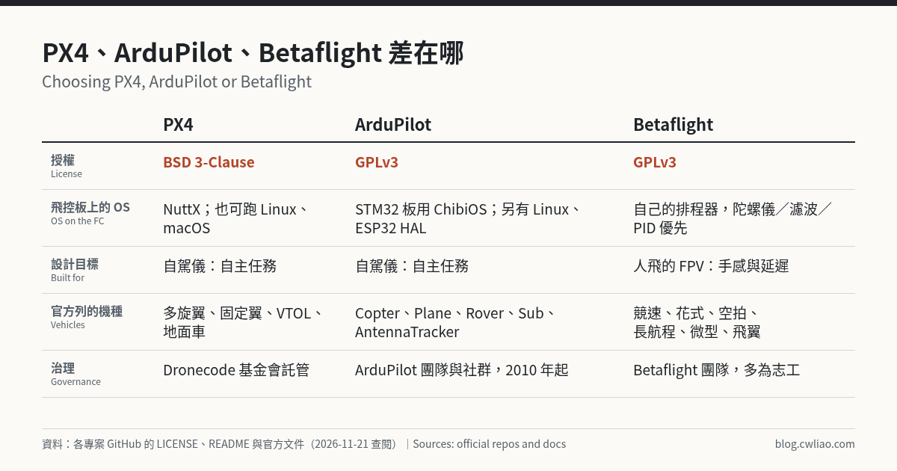
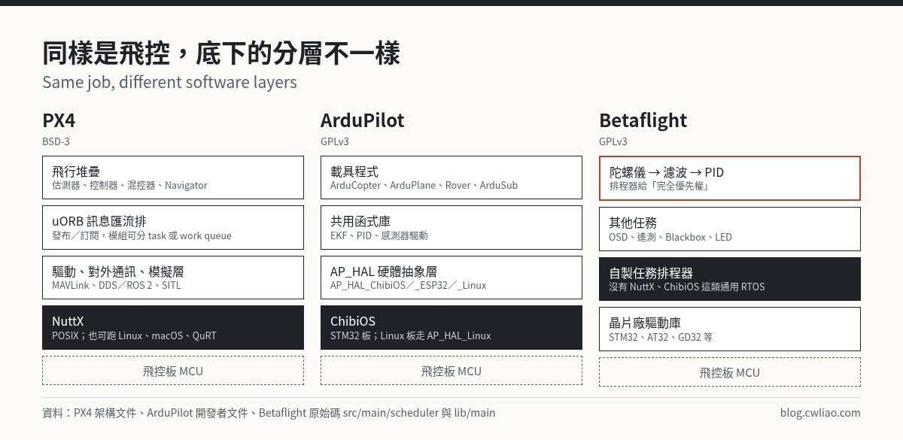

開源飛控韌體怎麼選：PX4、ArduPilot、Betaflight 的授權、社群與 RTOS
摘要： 開源飛控韌體主流就三套：PX4、ArduPilot、Betaflight。這篇直接翻官方原始碼庫的授權檔和文件，比較它們的授權（BSD-3 和 GPLv3）、底下跑的作業系統（NuttX、ChibiOS、Betaflight 自己的排程器）、適用機種和社群治理，最後講我會怎麼選。後半是本週無人機新聞與下週看點。
Summary: There are three mainstream open-source flight firmwares: PX4, ArduPilot and Betaflight. This post goes straight to each project's license file and official docs to compare licensing (BSD-3 vs GPLv3), the OS underneath (NuttX, ChibiOS, Betaflight's own scheduler), supported vehicles and governance, then explains how I'd choose. The second half covers this week's drone news and what to watch next.
開場：同一週，三個開源社群都有動靜｜Opening: One Week, Three Open-Source Projects Moving
這週剛好很適合談飛控韌體。
11/19，ArduPilot 發布 Copter 4.7.3 穩定版。公告裡說這版修了一個重要的振動失效保護（Vibration failsafe）問題，強烈建議用 4.7.0 到 4.7.2 的多旋翼和傳統直升機使用者更新；另外提醒 ATC_INPUT_TC 從 4.6 到 4.7 的縮放和預設值變小了，自己改過這個參數的人要乘 0.66 才能維持一樣的手感（ArduPilot 論壇公告、GitHub Release）。
PX4 那邊，託管 PX4 的 Dronecode 基金會 11/16 宣布韓國 Quantum Aero 以白金會員加入，創辦人進董事會；11/17 再宣布荷蘭的 HEIGHT Technologies 以銀級會員加入，這家做國防與公共安全用的小型無人機，基金會文章也提到它 2025 年向 Auterion 下單，用 Auterion 的飛控軟體堆疊驅動 500 套以上 ISR 系統（Dronecode：Quantum Aero、Dronecode：HEIGHT）。
還有一則比較少人注意：美國陸軍的 FPV 製造競賽（後面新聞第 3 則）要求國防合約管理署拆機檢查，確認沒有受管制外國對手的硬體、晶片或韌體（dronenr）。韌體也被當成供應鏈的一部分在查了。
上一篇〈推重比怎麼抓〉把動力和重量算完了，〈無人機架構全圖〉則把飛控放在架構的中間。這篇往飛控裡面看一層：上面跑哪套韌體，以及這個選擇會帶來什麼責任。
This is a good week to talk about flight firmware.
On November 19, ArduPilot released Copter 4.7.3 as stable. The announcement calls out an important fix to the vibration failsafe and strongly recommends that multicopter and tradheli users on 4.7.0–4.7.2 update. It also warns that ATC_INPUT_TC scaling and defaults were reduced from 4.6 to 4.7, so anyone who changed it should multiply by 0.66 to keep the same feel (ArduPilot forum, GitHub release).
On the PX4 side, the Dronecode Foundation, which hosts PX4, announced Korea's Quantum Aero as a Platinum member on November 16, with its founder joining the board, and the Netherlands' HEIGHT Technologies as a Silver member on November 17. The foundation notes HEIGHT ordered Auterion's flight stack in 2025 to power more than 500 ISR systems (Dronecode: Quantum Aero, Dronecode: HEIGHT).
And one detail that got less attention: the US Army's FPV Manufacturing Rodeo (news item 3 below) will use teardown inspections to confirm there's no covered foreign-adversary hardware, chips or firmware (dronenr). Firmware is part of the supply chain now.
Last week we closed the thrust and weight budget, and the architecture map put the flight controller at the center. This post opens the flight controller one more layer: which firmware runs on it, and what that choice commits you to.
1. 三套韌體一張表｜The Three Firmwares on One Page
先把官方查得到的事實排在一起。每一格都對過原始碼庫或官方文件。
| PX4 | ArduPilot | Betaflight | |
|---|---|---|---|
| 授權｜License | BSD 3-Clause（LICENSE） | GPLv3（COPYING.txt、授權頁） | GPLv3（LICENSE） |
| 飛控板上的 OS｜OS on the FC | NuttX 為主；也可跑在 Linux、macOS 等 POSIX 系統（架構文件） | STM32 板用 ChibiOS；另有 Linux、ESP32 的 HAL（開發者文件） | 自己的任務排程器，沒有通用 RTOS（scheduler.c） |
| 官方列的機種｜Vehicles | 多旋翼、固定翼、VTOL、地面車，還有其他實驗平台（README） | Copter、Plane、Rover、Sub、AntennaTracker（README） | 競速、花式、空拍、長航程、微型機和飛翼（README） |
| 治理｜Governance | Dronecode 基金會託管，屬 Linux 基金會 | ArduPilot 開發團隊與社群，有企業贊助的 Partners 計畫；2010 年開始開發 | Betaflight 團隊，官方說「小、而且大多是志工」 |
| 對外介面｜Interfaces | MAVLink、DDS／ROS 2 | MAVLink、ROS 2 | Betaflight App 設定；MSP、CRSF 等遙測 |
| 最新穩定版（11/21）｜Latest stable | v1.17（Dronecode） | Copter 4.7.3（11/19） | 2026.6.2（GitHub Releases） |

一句話版本：PX4 和 ArduPilot 是「自駕儀」（autopilot），從一開始就是為了自主任務、多種載具；Betaflight 是為了「人在飛」的 FPV 多旋翼，把手感和延遲做到極致。所以它們比較像不同用途的工具，拿來互相比分數意義不大。
Here are the facts side by side, each checked against the project's repository or official docs (table above).
The one-line version: PX4 and ArduPilot are autopilots, built from the start for autonomous missions across many vehicle types. Betaflight is built for FPV multirotors flown by a human, tuned hard for feel and latency. They're tools for different jobs, so scoring them against each other doesn't tell you much.
2. 授權：BSD-3 和 GPLv3 對產品的差別｜Licensing: What BSD-3 and GPLv3 Mean for a Product
先說清楚：我是工程師不是律師，下面是讀授權原文和專案官方說明的理解，真要出貨請找法務。
PX4 用 BSD 3-Clause。 授權檔只有三個條件：散布原始碼要保留版權聲明和免責聲明；散布二進位檔要在文件或其他附帶資料裡附上同樣的聲明；不能用版權人或貢獻者的名字替你的產品背書（PX4 LICENSE）。PX4 的 README 直接寫它是「對商業友善的 BSD-3 授權」，你可以用、改、散布在自己的專案裡（PX4 README）。白話講：改了可以不公開。
ArduPilot 和 Betaflight 用 GPLv3。 兩邊原始碼檔頭都寫「GPL 第 3 版，或（依你選擇）任何更新的版本」（例如 ArduCopter/Copter.cpp、Betaflight scheduler.c）。ArduPilot 的授權頁對「把軟體放進產品賣的公司」寫得很具體：要告訴客戶這是開源軟體，並在產品裡附上實際原始碼，或提供可以取得原始碼的連結；也希望衍生作品保留原本的貢獻者名單（ArduPilot 授權頁）。
同一頁還解釋他們為什麼選 GPL：要求把修正回饋出來（至少要給終端客戶），能增加貢獻者之間的合作，避免大家把小改進藏起來、最後分裂成一堆不相容的分支；而「v3」這部分是確保買機器的客戶有權升級或更換飛控上的 ArduPilot 版本，就算廠商不再支援，產品也能繼續用（ArduPilot 授權頁）。
這對做產品的團隊代表什麼？我的看法：
- 如果你的核心價值在飛控演算法本身，而且不想公開改動，BSD-3 的 PX4 比較好處理，PX4 自己也把這點當成對商業友善的賣點。
- 如果你的價值在任務電腦、酬載、地面站、整合和服務，飛控只是穩定的基礎，GPLv3 的 ArduPilot 一樣能做商品；只是要把「交付原始碼」這件事排進出貨流程，像 BOM 一樣管理。
- 不管哪一套，台灣工程會 9 月版無人機採購指引已經加了 SBOM（軟體物料清單）要求（中央社／聯合新聞網）。SBOM 裡每一個元件都會有授權欄位，所以授權不是法務最後才看的東西，是設計初期就要定的。
First, a caveat: I'm an engineer, not a lawyer. This is my reading of the license texts and the projects' own explanations. Talk to counsel before you ship.
PX4 is BSD 3-Clause. The license has three conditions: keep the copyright notice and disclaimer in source redistributions; reproduce them in the documentation or other materials for binary redistributions; and don't use the copyright holder's or contributors' names to endorse your product (PX4 LICENSE). The README calls it a "business-friendly BSD-3 license" that lets you use, modify and distribute the code in your own projects. In plain terms, you can keep your changes private.
ArduPilot and Betaflight are GPLv3. Source headers in both say "version 3 of the License, or (at your option) any later version." ArduPilot's license page is specific for companies shipping it in products: tell customers the software is open source, and provide the actual source code in the product or a link to where it can be found; it also asks that derivative works keep the original contributor credits (ArduPilot license page).
The same page explains the choice. Requiring fixes to flow back (at least to the end customer) increases cooperation and avoids a pile of incompatible forks. The "v3" part ensures the customer who bought the vehicle has the right to upgrade or replace the ArduPilot version on the flight controller, so the product stays useful even if the maker stops supporting it.
What this means for a product team, in my view:
- If your core value is the flight control code itself and you don't want to publish changes, BSD-3 PX4 is simpler, and PX4 itself pitches the license as business-friendly.
- If your value is in the mission computer, payload, ground station, integration and service, with the autopilot as a stable base, GPLv3 ArduPilot works fine commercially. You just need "deliver source" in the shipping checklist, managed like a BOM.
- Either way, Taiwan's procurement guideline for drones added an SBOM requirement in its September revision (CNA via UDN). Every SBOM entry has a license field, so licensing is a design-phase decision, not a last-minute legal check.
3. RTOS：NuttX、ChibiOS，和 Betaflight 的排程器｜RTOS: NuttX, ChibiOS and Betaflight's Scheduler
飛控上的程式要在固定時間內做完固定的事：讀陀螺儀、跑濾波、算控制、輸出馬達。晚了就是姿態抖。即時作業系統（RTOS）的工作，就是讓重要的事準時發生。
PX4 跑在 NuttX 上。 NuttX 是 Apache 軟體基金會的開源即時作業系統，主要遵循 POSIX 和 ANSI 標準，可以從 8 位元縮放到 64 位元的微控制器（Apache NuttX），授權是 Apache License 2.0（NuttX LICENSE）。PX4 文件說 NuttX 是飛控板上跑 PX4 的主要 RTOS；PX4 本身需要的是有 POSIX API、有某種即時排程（例如 FIFO）的作業系統，所以同一套程式也能跑在 Linux、macOS 或 QuRT（PX4 架構文件）。
PX4 的模組有兩種跑法：一種是獨立的 task，有自己的堆疊和優先權；一種是放進共用的 work queue，省 RAM、少切換，但不能 sleep、不能做阻塞式 IO。模組之間用 uORB 這個發布／訂閱訊息匯流排溝通。文件也舉例：多數 IMU 驅動以 1 kHz 取樣、積分後用 250 Hz 發布，實際頻率可以用 uorb top 看（PX4 架構文件）。
ArduPilot 在 STM32 板上用 ChibiOS。 ArduPilot 的開發者文件說，它靠一層 AP_HAL（硬體抽象層）移植到不同平台：AP_HAL_ChibiOS 給 STM32 板、AP_HAL_ESP32 給 ESP32、AP_HAL_Linux 給 Linux 板；ChibiOS 是以外部程式碼樹的方式引入（ArduPilot 開發者文件）。上層的 EKF、PID、感測器驅動等函式庫各種載具共用。
Betaflight 走另一條路。 原始碼裡看不到 NuttX、ChibiOS 這類通用 RTOS；lib/main 裡放的是 STM32、AT32、GD32 等晶片廠的驅動庫，排程是自己寫的（lib/main）。排程器原始碼裡有一行註解很直白：「即時的陀螺儀／濾波／PID 任務擁有完全優先權」（scheduler.c）。其他事情（OSD、遙測、LED）都排在後面，有空才做。
為什麼差這麼多？我的理解是目標不同。PX4、ArduPilot 要同時跑導航、任務、日誌、多種通訊，工作量變化大，需要一個真正的作業系統來分配；Betaflight 只想把「陀螺儀到馬達」這條路做到最短、最穩，不需要的東西就不要。

Flight code has to finish fixed work on a fixed schedule: read the gyro, filter, run the controllers, drive the motors. Late means wobble. An RTOS's job is to make the important things happen on time.
PX4 runs on NuttX. NuttX is an Apache Software Foundation open-source RTOS built around POSIX and ANSI standards, scaling from 8-bit to 64-bit microcontrollers (Apache NuttX), under the Apache License 2.0 (LICENSE). PX4's docs call NuttX the primary RTOS for PX4 on a flight controller; PX4 needs a POSIX API with some real-time scheduling (e.g. FIFO), so the same code also runs on Linux, macOS or QuRT (PX4 architecture).
PX4 modules run either as tasks, with their own stack and priority, or on shared work queues, which save RAM and context switches but can't sleep or do blocking IO. Modules talk over uORB, a publish/subscribe bus. The docs note that most IMU drivers sample at 1 kHz, integrate and publish at 250 Hz, and you can check real rates with uorb top.
ArduPilot uses ChibiOS on STM32 boards. Its developer docs describe an AP_HAL hardware abstraction layer: AP_HAL_ChibiOS for STM32 boards, AP_HAL_ESP32 for ESP32 and AP_HAL_Linux for Linux boards, with ChibiOS pulled in as an external tree (ArduPilot dev docs). Libraries such as the EKF, PID controllers and sensor drivers are shared across vehicle types.
Betaflight takes a different path. There's no general-purpose RTOS like NuttX or ChibiOS in the tree; lib/main holds chip-vendor driver libraries for STM32, AT32, GD32 and others, and the scheduler is its own. One comment in the scheduler says it plainly: "Realtime gyro/filtering/PID tasks get complete priority" (scheduler.c). OSD, telemetry and LEDs wait their turn.
Why so different? Different goals, as I read it. PX4 and ArduPilot juggle navigation, missions, logging and several links with a varying workload, so they need a real OS to share the CPU. Betaflight wants the gyro-to-motor path as short and steady as possible and leaves everything else out.
4. 適用機種與社群｜Vehicles and Community
PX4： 官方列多旋翼、固定翼、VTOL、地面車，所有機架共用同一套程式碼（含船、潛艇等其他機器人）（PX4 架構文件）。硬體走 Pixhawk 生態系，模擬有 SITL、HITL，README 甚至給了一行 Docker 指令就能跑模擬（PX4 README）。社群在 Discord、PX4 Discuss 論壇，還有每週開放的開發者會議。治理上，Dronecode 持有 PX4 商標，README 寫明「沒有單一公司擁有名稱或控制路線圖」。
ArduPilot： README 說它能控制「幾乎任何載具」，從固定翼、quadplane、多旋翼、直升機，到地面車、船、平衡車和潛艇；2010 年起開發（ArduPilot README）。地面站有 Mission Planner、MAVProxy，也能用 QGroundControl；4.7.3 的公告就寫可以用 Mission Planner 或 QGC 下載（公告）。支援論壇 discuss.ardupilot.org 很活躍，Release notes 每一條都附 PR 編號和作者，追問題很方便。
Betaflight： 官方說法是給「每一種無人機」的飛控軟體，涵蓋競速、花式、空拍、長航程、微型機和飛翼；支援 STM32 F4／F7／G4／H5／H7、AT32F435、APM32、RP2350 等處理器，馬達協定有 DShot、Oneshot、Multishot 等，內建 Blackbox 記錄（Betaflight README）。它有 GPS Rescue，但官方定位是「進階安全功能」：遙控或圖傳斷線時自動飛回來，直到夠近可以重新接手（Betaflight GPS Rescue），不是航點任務系統。版本從 4.x 改成年月制，每年 6 月和 12 月各一個主要版本（Betaflight 公告）。硬體政策也講明：Betaflight 修韌體，硬體由製造商負責，接線和調參是飛手自己的事（硬體政策）。
PX4: Officially supports multirotors, fixed-wing, VTOL and rovers, with all airframes sharing one codebase (including boats, subs and other robots) (PX4 architecture). Hardware centers on the Pixhawk ecosystem; there's SITL and HITL, and the README runs a simulator with one Docker command. Community lives on Discord, the PX4 Discuss forum and a weekly open dev call. Dronecode holds the PX4 trademarks, and the README says no single company owns the name or controls the roadmap.
ArduPilot: The README says it can control "almost any vehicle system imaginable," from planes, quadplanes, multirotors and helicopters to rovers, boats, balance bots and submarines, in development since 2010. Ground stations include Mission Planner and MAVProxy, and QGroundControl works too; the 4.7.3 announcement says to download it via Mission Planner or QGC. The support forum is active, and release notes list a PR number and author on every line, which makes tracing issues easy.
Betaflight: Describes itself as flight control software for every kind of drone: racing, freestyle, cinematic, long range, micros and wings. It supports STM32 F4/F7/G4/H5/H7, AT32F435, APM32 and RP2350, DShot and other motor protocols, and Blackbox logging (Betaflight README). GPS Rescue exists, but it's billed as an advanced safety feature that flies the craft home after RC or video loss until you can take over (GPS Rescue), not a waypoint mission system. Versioning moved from 4.x to calendar versions, with major releases each June and December (announcement). Its hardware policy is blunt: Betaflight fixes the firmware, manufacturers support their hardware, pilots own their builds (hardware policy).
5. 我會怎麼選｜How I'd Choose
「哪一套最好」我通常答不出來，要看情況。我會先問四個問題：
- 要不要自主飛？ 要航點、任務、Offboard、和任務電腦接 ROS 2，就在 PX4 和 ArduPilot 之間選。只是人飛、追求手感，Betaflight。
- 改動要不要公開？ 飛控演算法是你的核心價值、又不想公開，PX4 的 BSD-3 比較好處理。能接受交付原始碼，ArduPilot 的 GPLv3 不是問題。
- 什麼機種？ 固定翼、VTOL、地面車，兩套自駕儀都支援，船和潛艇兩邊文件也都有提到；我的印象是 ArduPilot 在「冷門機種」的覆蓋更廣，PX4 則有一個基金會和一群會員公司在推。FPV 穿越機和小型多旋翼，Betaflight 生態最完整。
- 誰要維護它？ 這是最常被忽略的。韌體會一直更新，像這週 ArduPilot 4.7.3 修振動保護、參數縮放也變了。你的團隊要有人追版本、讀 release notes、在 SITL 和實機上回歸測試。選一套你的團隊追得動的。
以陸軍的 FPV 競賽為例：一架單價上限 3,000 美元、馬達和機架由陸軍提供的 7 吋、10 吋 FPV，又要在電子干擾下飛、還要拆機查韌體來源（dronenr）。公告沒有指定用哪套韌體。但「查得出韌體來源」這一條，對能交出完整原始碼和版本紀錄的團隊比較有利；這是我的推論，我猜之後會有更多標案這樣寫。
I can't usually answer "which one is best." I ask four questions first:
- Does it need to fly itself? Waypoints, missions, Offboard control, ROS 2 on a mission computer: choose between PX4 and ArduPilot. Human-flown with feel as the priority: Betaflight.
- Must your changes stay private? If flight control code is your core value and you won't publish it, BSD-3 PX4 is simpler. If you can deliver source, GPLv3 ArduPilot is fine.
- What vehicle? Both autopilots support fixed-wing, VTOL and rovers, and both docs mention boats and subs. My impression is ArduPilot covers more unusual vehicles, while PX4 has a foundation and member companies behind it. For FPV racers and small multirotors, Betaflight's ecosystem is the most complete.
- Who maintains it? The most overlooked question. Firmware keeps moving; this week ArduPilot fixed the vibration failsafe and parameter scaling changed. Someone on your team has to track releases, read notes and regression-test in SITL and on real aircraft. Pick the one your team can keep up with.
The Army's FPV Rodeo is a good example: a 7- or 10-inch FPV under $3,000, with Army-supplied motors and frames, expected to fly through electronic warfare and pass a teardown that checks firmware origin (dronenr). The notice doesn't name any firmware. But a firmware-origin check favors teams that can hand over full source and version history; that's my inference, and I'd guess more tenders will be written this way.
6. 換韌體前的檢查清單｜Checklist Before You Commit
授權義務寫進出貨流程： BSD-3 要附版權聲明；GPLv3 要給客戶原始碼或連結。和 SBOM 一起管。
板子在不在支援清單： PX4 看官方 Autopilot Hardware 頁，ArduPilot 看 firmware.ardupilot.org 有沒有你那塊板子的韌體，Betaflight 看硬體政策和 cloud build 有沒有你的 target。
日誌工具先跑一次： PX4 的日誌分析工具、ArduPilot 的飛行日誌、Betaflight 的 Blackbox。上一篇用懸停油門校正重量模型，靠的就是這些日誌。
SITL 先飛再上實機： PX4 和 ArduPilot 都有 SITL；Betaflight README 也列了 SITL。
固定版本、讀 release notes： 像
ATC_INPUT_TC這種跨版本的參數改變，不讀就會在實機上踩到。Put license duties in the shipping process: BSD-3 needs the notice; GPLv3 needs source or a link for customers. Manage it with the SBOM.
Check board support: PX4's Autopilot Hardware page, firmware.ardupilot.org for your board, Betaflight's hardware policy and cloud build targets.
Run the log tools once: PX4's log analysis tools, ArduPilot flight logs, Betaflight Blackbox. Last week's hover-throttle check depends on them.
Fly SITL before hardware: PX4 and ArduPilot both have SITL; Betaflight's README lists SITL too.
Pin versions and read release notes: cross-version changes like
ATC_INPUT_TCbite on real aircraft if you skip them.
工程師重點｜Engineer's Takeaways
- 先分自駕儀和 FPV 韌體。 PX4、ArduPilot 為自主任務設計；Betaflight 為人飛的手感設計。 Separate autopilots from FPV firmware. PX4 and ArduPilot are built for autonomy; Betaflight for human-flown feel.
- 授權是設計決定。 PX4 是 BSD-3，ArduPilot、Betaflight 是 GPLv3；產品要交付什麼，在選料階段就要定，和 SBOM 一起管。 Licensing is a design decision. BSD-3 for PX4, GPLv3 for ArduPilot and Betaflight; decide what you'll deliver early and track it with the SBOM.
- RTOS 決定「準時」怎麼來。 PX4 用 NuttX、ArduPilot 在 STM32 上用 ChibiOS、Betaflight 用自己的排程器讓陀螺儀到 PID 優先。看懂這層，除錯抖動和延遲才有方向。 The RTOS decides how "on time" happens. NuttX for PX4, ChibiOS on STM32 for ArduPilot, a custom gyro-first scheduler for Betaflight. Knowing this layer points your jitter and latency debugging in the right direction.
下週預告｜Next Week
下一篇我想回到硬體，談機架設計：材料、剛性和振動，剛好接這週 ArduPilot 修的振動保護。｜Next, back to hardware: frame design, materials, stiffness and vibration.
本週無人機大新聞｜This Week's Big Drone News
1. 追加預算三讀，559 億無人載具過關，附國產要求｜Taiwan Passes Supplementary Budget, NT$55.9B for Uncrewed Systems with Local-Production Strings
立法院 11/20 三讀通過 115 年度追加預算 6,076 億元，一毛未刪，其中國防部無人載具 559 億元過關。院會同時通過國民黨團提案：第二代海搜戰術型無人機、濱海監偵型、濱海攻擊型無人機和小型自殺式無人艇要在國內採購、國內生產；可攜式無人機反制系統和智慧垂直起降型無人機可以對外採購，但 3 年內國內產製比例要提高到 50%，並提出關鍵技術移轉清單；這 6 項新增案要在 2027 年 5 月底前完成招標（鏡報）。
我的看法：「3 年內國產 50%」對外購機種是很具體的工程題目，要拆得出哪些子系統能在台灣做、哪些要技轉。飛控韌體和地面站軟體，很可能是最先被拿來討論的一塊。
On November 20, Taiwan's legislature passed the NT$607.6 billion supplementary budget without cuts, including NT$55.9 billion for the defense ministry's uncrewed systems. It also passed a KMT motion: second-generation maritime search drones, littoral surveillance and strike drones, and small attack USVs must be bought and built domestically; portable counter-drone systems and the smart VTOL drone may be bought abroad, but must reach 50% local production within three years with a list of key technology transfers; all six new programs must finish tendering by end of May 2027 (Mirror Daily).
My view: "50% local within three years" for imported systems is a concrete engineering problem. Someone has to decide which subsystems can be made in Taiwan and which need technology transfer, and flight software is likely one of the first pieces on the table.
2. 海軍 360 億、280 架垂直起降無人機公開招標；海巡 V-BAT 在恆春做適航驗證｜Taiwan Navy Tenders 280 VTOL Drones; Coast Guard V-BAT Undergoes Airworthiness Checks
國防部國防採購室 11/16 公告海軍「智慧垂直起降型無人機」案公開招標，預算 359 億 7257 萬 4000 元，最有利標，分 4 年籌獲 280 架無人機、140 套導控系統和 82 輛運輸載具；12/15 開標，須 3 家以上合格廠商投標，押標金 5,000 萬元。公告沒有指定機型或廠商（自由軍武頻道）。
同一週，海巡署向 Shield AI 採購的 12 架 V-BAT（漢翔得標）在屏東恆春機場地面測試和試飛。聯合報引官員說法：美國援助的 JUMP20 有美國空軍出具的適航證明，可以走形式驗證；V-BAT 則要由民航局實測，甚至抽檢拆驗零件。海軍也派人到場觀察（聯合新聞網）。
適航驗證要拆零件，軟體版本和組態一樣會被問。從工程師角度看，交付文件裡「飛控韌體是哪個版本、從哪裡來、改了什麼」最好一開始就準備好。
Taiwan's defense procurement office opened the Navy's smart VTOL drone tender on November 16: NT$35.97 billion, best-value award, 280 drones, 140 control systems and 82 transport vehicles over four years. Bids open December 15 and need at least three qualified bidders; no aircraft or vendor is specified (Liberty Times Defense).
The same week, the Coast Guard's 12 Shield AI V-BATs (contract via AIDC) went through ground tests and flights at Hengchun airport. UDN quotes officials: the US-donated JUMP20 came with a US Air Force airworthiness certificate, but the V-BAT must be tested by Taiwan's CAA, including spot teardown of parts, with Navy observers on site (UDN). If parts get torn down, firmware version and configuration will be asked about too; have that documented from day one.
3. 美國陸軍 FPV 製造競賽：400 架、單價上限 3,000 美元、拆機查韌體｜US Army FPV Manufacturing Rodeo: 400 Drones, $3,000 Cap, Teardown for Firmware
美國陸軍合約司令部 11/13 公告 sUAS「Manufacturing Rodeo」的無人機部分，回覆期限 11/20：首批 400 架 Group 1 FPV 單向攻擊機加 20 套地面站，單價上限 3,000 美元，2027/3/1 前交機，其中 10% 要在 2/15 先交作測試和訓練。陸軍提供 6S2P／6S4P 電池、2807／3115 無刷馬達、7 吋和 10 吋機架套件；廠商要交完整 BOM，追到晶圓製造和產地；國防合約管理署會拆機確認 100% 在美國本土組裝，沒有受管制外國對手的硬體、晶片或韌體（dronenr）。DRONELIFE 補充：系統要在電子干擾、衛星導航受限的環境下運作，表現好的可能拿到最多 1 萬架的後續生產選項（DRONELIFE）。
The US Army Contracting Command posted the drone portion of its sUAS Manufacturing Rodeo on November 13, with responses due November 20: 400 Group 1 FPV one-way attack drones plus 20 ground stations, capped at $3,000 each, due by March 1, 2027, with 10% early on February 15. The Army supplies 6S2P/6S4P packs, 2807/3115 motors and 7- and 10-inch frame kits; bidders must submit a full BOM down to wafer fab and origin, and DCMA teardowns will confirm 100% US assembly and no covered foreign-adversary hardware, chips or firmware (dronenr). DRONELIFE adds that systems must work under EW and limited GNSS, and strong performers could get follow-on options up to 10,000 aircraft (DRONELIFE).
4. FCC 開放 450 MHz 給無人機控制鏈路，24 GHz 可用於偵測雷達｜FCC Opens 450 MHz for Drone Control Links, 24 GHz for Detection Radar
FCC 11/19 公開會議通過：450 MHz 頻段開放給地面和有人、無人航空器之間的安全相關資料鏈，改成全國單一執照；目前只有已持有全部 54 個地面台執照的 Aura Network Systems 符合資格。同一包規則允許地面雷達使用 24.45–24.65 GHz 偵測、追蹤無人機，但只涵蓋偵測，擊落仍歸其他聯邦法律管。報導也提醒，投票當天 FCC 還沒公布最終條文，建置細節是依 10/29 的草案（dronenr）。
對設計端來說，有專用航空頻段的指令與控制鏈路（C2），代表飛控和數傳之間的介面、失聯處理邏輯，以後可能要對應不同等級的鏈路。
At its November 19 open meeting, the FCC opened the 450 MHz band to safety-related data links between the ground and crewed or uncrewed aircraft under a single nationwide license; Aura Network Systems, which holds all 54 ground-station licenses, is the only qualifier. The package also lets ground radar use 24.45–24.65 GHz to detect and track drones; detection only, since takedown falls under other federal laws. The final text wasn't out on vote day, so build-out details come from the October 29 draft (dronenr). A dedicated aviation C2 channel means link-loss logic in the autopilot may need to handle different link classes.
5. Auterion 與烏克蘭 Skyfall 在德國合資造無人機｜Auterion and Ukraine's Skyfall Plan a Drone JV in Germany
路透 11/20 報導：無人機軟體公司 Auterion 和烏克蘭 Skyfall 計畫在德國成立合資公司，替烏克蘭生產無人機，先做 Skyfall 的 Shrike FPV 攻擊機。德國先前出資的 5 萬架 Shrike 合約（約 9,000 萬歐元）兩家公司說已交付。匿名業界人士說德國政府資金是「數億歐元」等級，目前用於給烏克蘭的訂單；德國政府當下沒有回應（MarketScreener／路透）。
Auterion 的 Skynode X 列在 Dronecode 官網的「Products Enabled by Dronecode」（Dronecode）。和開場那兩則會員新聞放在一起看，我的觀察是 PX4 生態圈現在有很大一塊動能來自國防。
Reuters reported on November 20 that drone software company Auterion and Ukraine's Skyfall plan a joint venture to build drones in Germany for Ukraine, starting with Skyfall's Shrike FPV attack drone. A German-funded contract for 50,000 Shrikes (about €90 million) has been delivered, the companies said. An anonymous industry source put German government funding in the triple-digit million euro range; the government couldn't be reached (MarketScreener/Reuters). Auterion's Skynode X is listed among "Products Enabled by Dronecode" (Dronecode); together with the membership news above, my read is that much of the PX4 ecosystem's momentum now comes from defense.
其他值得一看｜Also Worth a Look
- Uber Eats 和 Zipline 11/17 起在德州休士頓郊區 Spring 開始無人機外送，下一站達拉斯；目標 2029 年底每天 100 萬單。Zipline 的機在 300 英尺以上巡航，用繩索放下配送艙，載重最多 8 磅、半徑 10 英里（The Verge）。｜Uber Eats and Zipline start drone delivery in Spring, Texas; 8 lb, 10-mile radius.
- 陸軍無人系統訓練指揮部 11/18 和虎尾科大簽合作備忘錄，是該指揮部成立後第一所合作大學，方向包括技術研發、快速製造、機動維修和測試驗證（聯合新聞網）。｜Taiwan Army's uncrewed systems command signs its first university MOU, with NFU.
- 民眾黨團 11/17 指出，工程會 9 月版「遙控無人機採購作業指引」新增例外條款：國內沒有能滿足需求的機型時，經首長核准可免除國產、非紅供應鏈和平戰轉換規格；同版也新增 SBOM 要求（中央社／聯合新聞網）。｜Taiwan's drone procurement guideline adds an exception clause and an SBOM requirement.
- Elroy Air 和阿布達比 Barq Group 簽約，最多 20 架 Chaparral 混合動力貨運無人機、價值最高 7,000 萬美元；其中 5 架確定訂單、訂金 1,025 萬美元，2027 年開始交機，由 Kratos 在加州沙加緬度生產（DroneDJ）。｜Elroy Air signs for up to 20 Chaparrals with Barq Group; 5 firm.
- Factorial 11/18 發表給航太和無人機用的 FAERO 電池平台，公司稱和現有高功率鋰電池比，能量密度最高多 80%、滿功率下能量最高 4 倍；這是廠商說法（Factorial）。｜Factorial launches FAERO cells for drones; company claims, not independent tests.
下週可能發展｜What to Watch Next Week
- 11/24（一）–11/27（四）陸軍無人機訓測評鑑，臺南白河，首度加入夜間接戰和雙機協同打擊。｜Nov 24–27: Taiwan Army drone evaluation in Baihe, adding night engagement and two-drone strikes.（自由軍武頻道）
- 11/25（三）FCC 無人機衛星通訊提案初次意見截止。｜Nov 25: initial comments due on the FCC drone satcom proposal.（Federal Register）
- 12/7 FAA Part 108（BVLOS）法定期限，規則 7/10 起在白宮 OIRA 審查，還沒有公布日期。｜Dec 7: statutory deadline for Part 108; still at OIRA, no date.（UAV Coach）
- 12/15 海軍 280 架垂直起降無人機開標。｜Dec 15: bids open for the Navy's 280 VTOL drones.（自由軍武頻道）
- 日期未定｜No date yet： 海巡 V-BAT 適航驗證結果（聯合新聞網）；歐盟 EDF D-STORM 計畫徵集遊蕩彈藥和 UCAS 使用經驗，2027/1/11 截止（歐盟執委會）。｜Coast Guard V-BAT airworthiness result; EU D-STORM open call closes Jan 11, 2027.
Albert｜無人機工程師｜Drone Engineer
履歷｜Resume：cwliao.com
連載頁｜Series：無人機開發 52 週｜Drone Dev in 52 Weeks